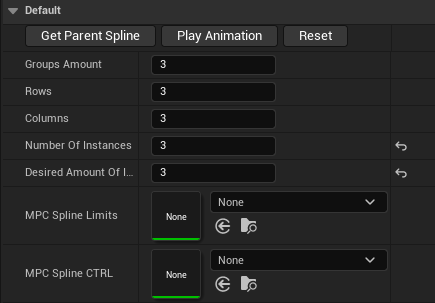
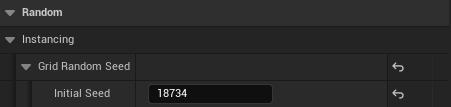
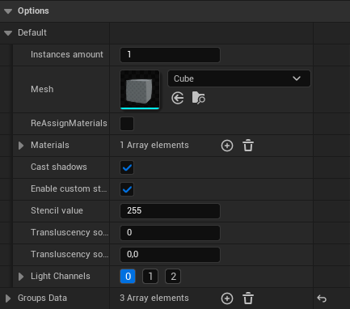
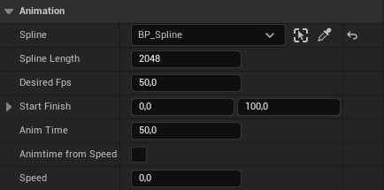

BP_RandomInstanceShaderGrid¶
RYM_Utilities
Инструмент для инстанцирования мешей с поддержкой гибридной рандомизации трансформов. Принцип работы в следующем: пользователь создаёт и настраивает группы инстансов по своим визуальным предпочтениям и настраивает размерность сетки и случайность распределения индексов инстансов, эти данные в свою очередь взаимодействуют с материалами инстансов. В инструмент заложена примитивная логика анимации инстансов по сплайну через материал и MaterialParameterCollection.
TBD дописать
Default¶
Настройка сетки инстансов

- Rows и Columns - горизонтальная размерность сетки: кол-во рядов и колонок ячеек.
- Groups Amount - кол-во групп инстансов, которые нужно распределить по ячейкам. "Группой" в данном случае называется любой инстанс, который должен отличаться по геометрии или наложенному материалу.
- Number Of Instances - выводит кол-во инстансов созданных инструментом.
- Desired Amount Of Instances - выводит запрошенное пользователем кол-во инстансов. Эти два значения не обязаны совпадать
MPC Spline CTRL¶
MPC Spline CTRL - любой ассет MaterialParameterCollection, у которого есть два скалярных параметра: DisplayFrame и TimeFraction. А так же следующие векторные параметры:
- GridSpacing
- Scale
- RandomLocation
- RandomRotation
- RandomScale
- Prerotation
Используется в паре с MPC Spline Limits. Параметры MPC Spline CTRL настраивают трансформации объектов по сетке и расстояние между ячейками, когда как за случайность выбора ячейки отвечает параметр Grid Random Seed в категории Random.

Options¶
Настройки группы

Default¶
Настройки по умолчанию, с которыми будут создаваться новые группы
- Instances Amount - желаемое кол-во инстансов
- Mesh - инстанцируемая геометрия, материал лучше назначить заранее, но не обязательно благодаря параметру...
- ReAssignMaterials - включает переназначение материалов на объект
- Materials - материалы для переназначения
- Cast Shadows - переключатель отбрасывания теней группой
- Enable custom stencil - переключатель работы custom stencil для группы
- Stencil value - Значение stencil
- Transluscency sort priority - сортировка транслюсентности по приоритету инстансов в группе
- Transluscency sort distance - расстояние сортировки транслюсентности инстансов в группе
- Light Channels - световые каналы группы
Groups Data¶
Аналогичные структуры хранящие настройки уже конкретных инстанцированных групп
Animation¶
Настройки анимации

- Spline - актор содержащий spline компонент для движения
- Spline Length - "длина сплайна", а фактически горизонтальное разрешение текстуры, так как это значение используется для анимации в материале
- Desired Fps - желаемый fps тика этого актора во время анимации, может быть полезно для синхронизации с fps вьюпорта
- Start Finish - начальная и конечная точки движения в процентах от длины сплайна
- Anim Time - время в секундах на анимацию
- Animtime from Speed - вычислить время анимации исходя из желаемой скорости движения
- Speed - желаемая скорость движения, работает только при активированном Animtime from Speed